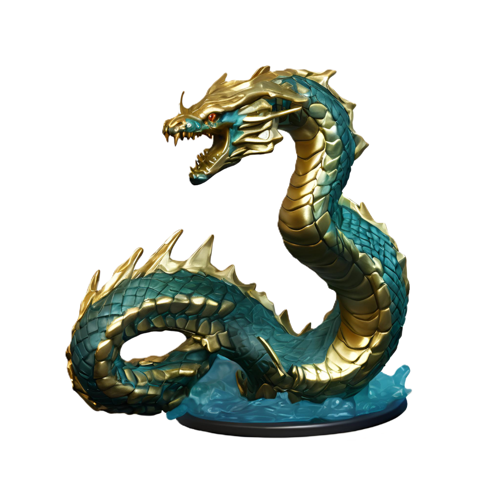

Jibana

River fey of the Jibana river in Kashar, Jibana is adorned with gold, fitting the gold-rich region.
🡐 Fey Tíra
River fey of the Jibana river in Kashar, Jibana is adorned with gold, fitting the gold-rich region.
🡐 Fey Tíra